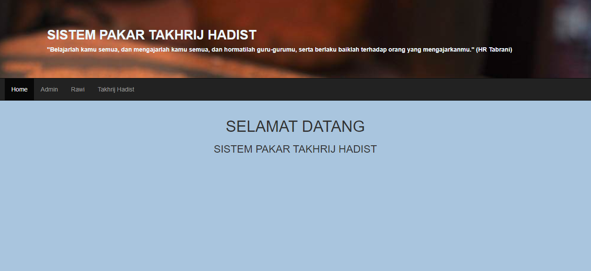
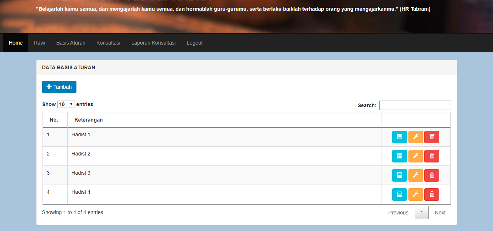

Sistem Pakar Takhrij Hadits
Ini adalah aplikasi sistem pakar berbasis web untuk menentukan kualitas Hadits menggunakan parameter dalam takhrij Hadits.
Data yang digunakan dalam penelitian ini diambil dari kitab Hadits Shahih Muslim karangan Ibnu Al-Hajjaj.
Peralatan pendukung penelitian adalah seperangkat komputer dengan processor Intel Core i7-4712MQ 2.30 GHz, memori 8 GB, harddisk 1000 GB.
Di aplikasi ini user dapat memasukan data input berupa text Hadits kemudian sistem melakukan proses menentukan kualitas Hadits yang di inputkan.
Hasil akhir dari aplikasi tersebut adalah menentukan kualitas Hadits apakah Hadits tersebut diterima atau ditolak
Technologies:
- - Sistem Operasi: Windows 10
- - Bahasa Pemrograman: PHP
- - Database: MySQL versi 5.6+ /MariaDB versi 10.0+
- - Pemodelan Sistem: StarUML
- - Pemodelan Database: Power Designer
- - Perancangan Interface: Pencil
- - Text Editor: Visual Studio Code
- - XML2PDF - PDF generator
Basis Aturan
